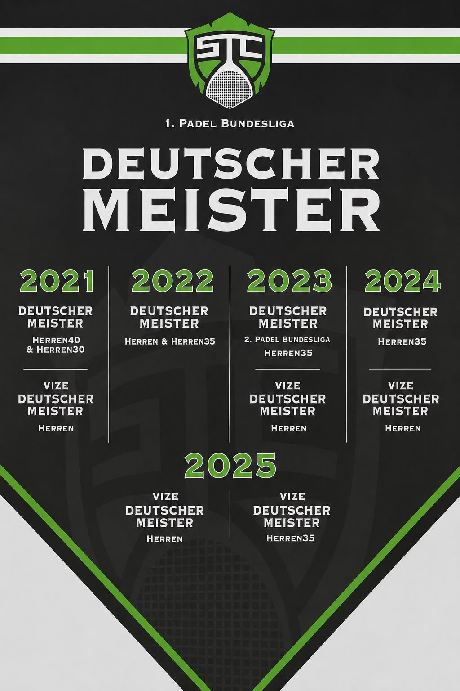

- Inicio
- Ligas
Ligas y equipos
Tenis en la liga bávara y regional, pádel hasta la primera Bundesliga, y entre medias nuestra propia Bavaro Padel League.
Deporte de equipo
Del equipo juvenil a la primera Bundesliga
El STC Oberland presenta equipos de tenis y pádel, desde categorías juveniles hasta la CUPRA Padel Bundesliga, pasando por la liga bávara y la regional. Si juegas con regularidad y quieres competir, aquí hay equipo para ti.
Los calendarios, clasificaciones y resultados los gestionan las federaciones. Los enlaces de abajo llevan directamente a nuestras páginas en la Federación Bávara de Tenis y en la Federación Alemana de Pádel.

Temporada 2026
Nuestros equipos
- 12equipos de tenis
- 9equipos de pádel
- 7equipos juveniles
- 4equipos en primera Bundesliga
Datos al inicio de la temporada 2026. [[ COMPROBAR CIFRAS ANTES DE LA TEMPORADA ]]
Bavaro Padel League
Nuestra liga de pádel propia
La Bavaro Padel League se disputa por ciclos a lo largo de la temporada. Para los socios de pádel la cuota está incluida en el abono anual: solo tienes que inscribirte y te asignamos grupo.
[[ SUSTITUIR EL PDF TRAS CADA CICLO ]] — sustituye el archivo en assets/docs/bavaro-padel-league.pdf, el enlace no cambia.
¿Quieres entrar en un equipo?
Dinos brevemente qué deporte y qué nivel: te ponemos en contacto con el equipo adecuado.